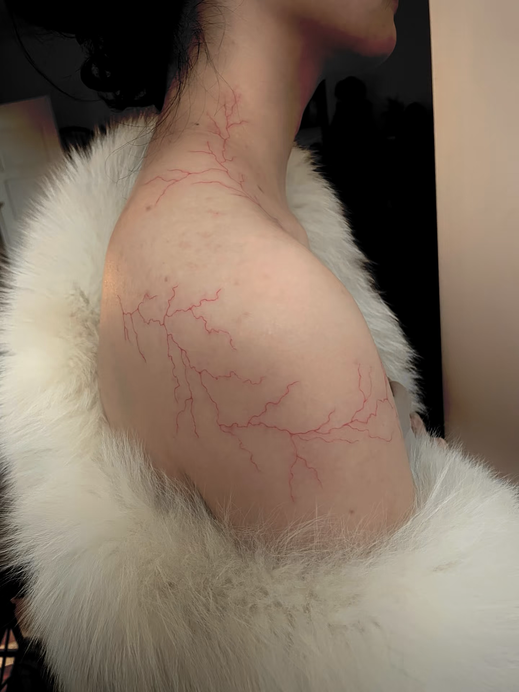
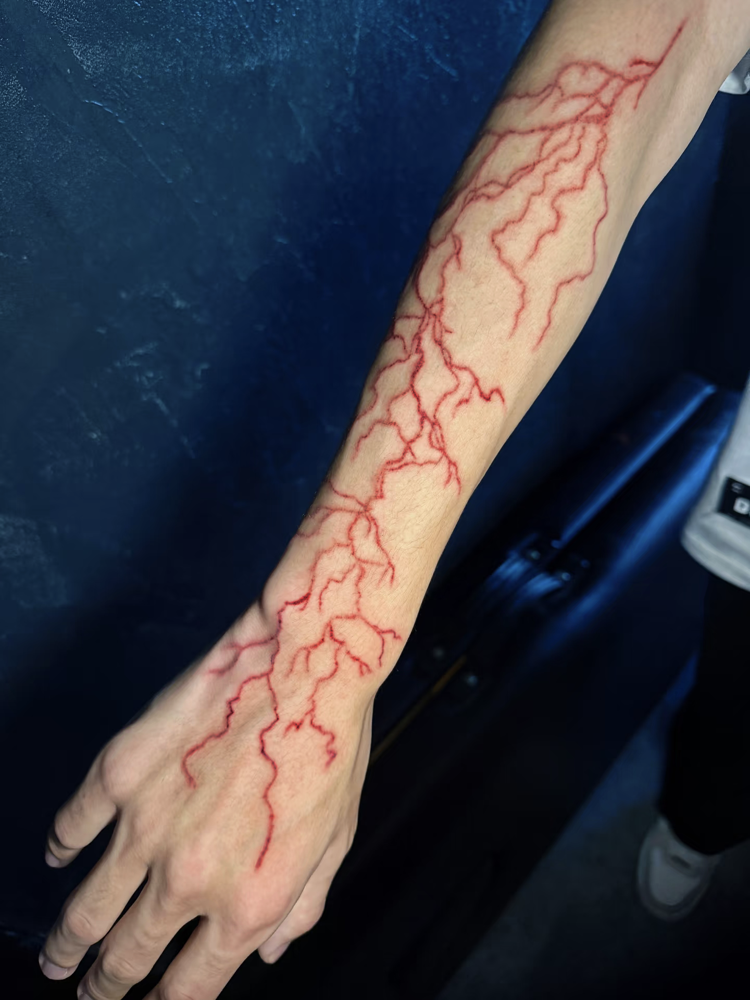

WORLD 004
红线症IF-娱乐圈PARO
是什么让我们被红线缠绕
“我是被遗忘在尘世的人类，于今日向自己揭示了自己：
坠落的、了无希望的、处于湮灭当中的。
如此，才能够突然地接近那场向着天空之虚无的撕心裂肺的坠落。”
关于红线症
Redvein
红线症患者中雄虫宿主的国际通用称呼。
Cure
红线症患者中雌虫宿主的国际通用称呼。
红线症
一种罕见的寄生虫病。
经科学研究表明，红线症大概率为寄生虫感染导致。Redvein身上寄生的为雄虫，Cure身上寄生的为雌虫。基于某种隐形的契合度，Cure与Redvein相互匹配，具有唯一性。
Redvein对与之匹配的Cure具有一定的感知能力，唯有获得Cure的“爱意”，Redvein才能彻底治愈这种怪病。而那个人的鲜血、眼泪、唾液……所有体液都是缓解病症最好的止痛剂。
Cure体内的雌虫与Redvein体内的雄虫一生都在为生殖繁衍做准备。为了达到目的，雄虫会持续释放毒素迫使宿主寻找与自己最契合的那个雌虫宿主。这种毒素会导致Redvein的皮肤上自心口处生长出蛛网状的红痕，并发症为红痕处产生极强的灼烧感，红痕随着时间的推移会逐步向着四周的皮肤扩散。
雌虫的信息素会通过寄生进入到宿主体内，雄虫的毒素对这些信息素非常敏感，一碰到就会平息，所以Cure的体液才能缓解Redvein在红线症病发时的疼痛并抑制红痕的生长。但是无论哪种体液，都只能缓解Redvein的疼痛，无法治愈，Redvein想要让红线症痊愈的途径只有让Cure爱上自己这一条。
Redvein的心口会长出一条只有自己能看到的红线，旁人只有通过“近外红线”检测才能看到雄虫和雌虫的存在。离得远时，Redvein只能感觉到与自己相连的Cure，但红线不会相连，只有离得足够近（约50~100m）时红线才会纠缠在一起。
而必须要Cure爱上红线症患者才能治愈这个疾病，目前的猜测为雌虫或许需要Cure分泌某种特定的物质，它吸收了，才能够有这个能量来与雄虫交配和孕育下一代。而这种物质只有在Cure对Redvein的爱意达到一定阈值的时候，才会由Cure的体内生成。
Cure对Redvein的喜欢达到一定量后，红线虫就会进入结合状态。在这个阶段，雄虫会停止释放毒素，Redvein不再能看到红线，就人类而言其实已经痊愈，无需再过多关注。
Cure爱上Redvein，治愈红线症，这是最好的结局。除此之外的结局，都会伴随Redvein的死亡。
若Redvein意外死亡或者被毒素折磨致死，雄虫会随之死亡，雌虫则不会再选择新的雄虫，逐渐在宿主体内凋亡，Cure对此不会有任何感觉。
控制局
相关病症患者的官方管理组织。
该病症患者的官方管理组织简称。若患者在疾病控制预防中心的特殊门诊（隶属于控制局）确诊红线症，则会被控制局登记。
控制局会协助Redvein寻找与之配对的Cure，并提供定量止痛药。如果配对的Cure已在控制局登记，控制局也会协助双方联系。
由于感染信息并不属于保密内容，因此会被录入个人档案中。部分Redvein为避免身份暴露，会选择避开控制局所属医院。
红痕样式
请注意区分「红线」与「红痕」


类似闪电纹的效果，会随着病情加重逐渐变红、增粗。
主要角色
其他角色
黎玙
「经纪人」
从离颜刚入行开始
就陪伴她成长的至交
长宁
「助理」
帮助离颜打理一些
生活上的事宜
陆有川
「医生」
离颜一直以来
都由他负责看病体检
林楠
「导演」
离颜的好友
第二次合作拍摄了《荒途》
叶卡
「音乐人」
西木子的好友